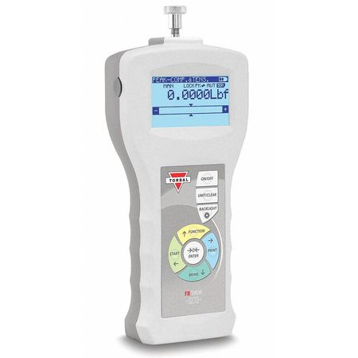

$399.95
Digital Force Gauge: Use this high-tech tool to accurately measure compression and tension up to 5000 grams. Four AA batteries required.
Stock Number: DFG4-412


$399.95
Digital Force Gauge: Use this high-tech tool to accurately measure compression and tension up to 5000 grams. Four AA batteries required.
Stock Number: DFG4-412
Price $159.95
Structure Tester: Designed specifically for toothpick bridge competitions, this tester features a sturdy metal stand with an adjustable bridge span connected to a load bucket. Loads can be adjusted by adding sand (not included).
Stock Number: ST1-003
$10.95
Balsa Strips: March Special! Pack of 50 balsa strips (1/8"x1/8"x36") perfect for bridge competitions.
Stock Number: BS40-232
$15.95
Basswood Strips: Pack of 50 basswood strips (1/8"x1/8"x24") perfect for bridge competitions.
Stock Number: BS40-232
$19.95
Timber Cutter: A useful tool for precision cutting of 1/8" wooden sticks. The acrylic safety guard prevents finger injury. Miter marks can be used for making angle cuts. Contains five razor blades.
Stock Number: TC24-981
$19.95
Bridge Video: A fun and instructional video on the history, theory, and design of bridges. 28 minutes.
Stock Number: VI-322
$5.95
Bond Adhesive: Maxwell Scientific's special adhesive is perfect for toothbridge bridge and towers. It dries quickly, providing a rigid bond. Nontoxic
Stock Number: AD10-710
Price $9.95
Modeling Clay: Maxwell Scientific's modeling clay is a smooth, firm clay with remarkable consistency to retain the shape into which it's molded. Nontoxic and nonhardening. Comes in five different colors.
Stock Number: MC5-212